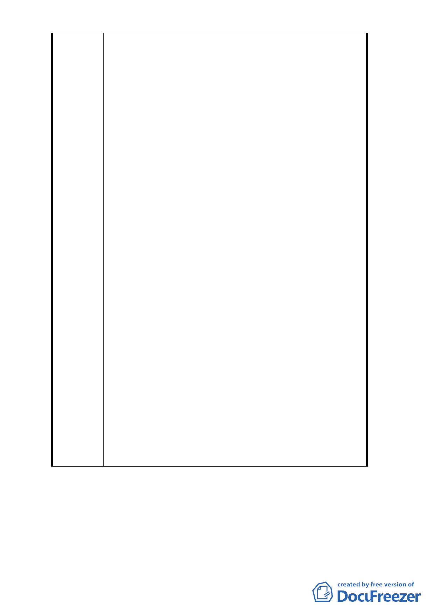

三、1.就原都市計劃書內之開發主體威京公司（即威京
開發投資股份有限公司），與本公司相互間權利義
務關係為何，依臺北市政府都市發展局（下稱都
發局）於中華民國 99 年 5 月 3 日北市都規字第
09932661600 號函說明二已明示『「依本府 80 年 2
月 13 日府工二字第 80003366 號公告「修訂台北
市土地使用分區（保護區、農業區除外）計畫（
通盤檢討）案」內有關八德路四段、東寧路、縱
貫鐵路，八德路四段一○六巷所圍地區（原唐榮
鐵工廠）土地使用計畫案」內規定「本案開發計
畫應由威京投資開發股份有限公司整體開發」，故
貴公司（即京華城公司）非屬計劃書載明之開發
主體，另倘貴公司有開發意願，仍請依本局 99 年
4 月 12 日召開「位台北市松山區西松段三小段 184
地號等 8 筆土地之更新計畫涉及都市計畫變更事
宜研商會議紀錄」結論（諒達），先與威京投資開
發股份有限公司協調釐清「整體開發主體」及「
私權間的權益義務」後再據以辦理後續都市計畫
變更事宜。』準此，本計畫案內之開發主體就上
開函文即指定為指威京公司迄今並無任何變更。
2.本公司從民國 99 年 5 月起至 102 年 11 月申請都
市計畫細部變更，台北市都發局以本計劃案內有
關捐地 30％之義務係各地主與威京公司之私權間
的權益義務爭執，尚須先行就此部分釐清後，始
得辦理後續都市計畫變更而一再退件處理。
3.今都發局呈送本修訂案前，亦應先釐清上開文件
中本案目前之開發主體與各地主間之「私權間的
權益義務」後始能將原計劃案進行修訂，否則如
未釐清「私權間的權益義務」前，都發局即提出
修訂案，則難謂無雙重標準之疑慮，並更顯示出
都發局係刻意侵害本公司權利。
四、檢送本公司就台北市都委會 102 年 12 月 10 日小組
會議結論之意見說明詳如附件。
- 53 -